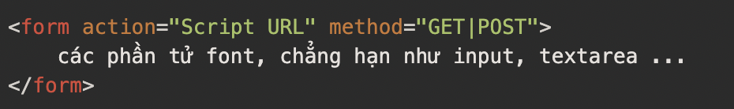
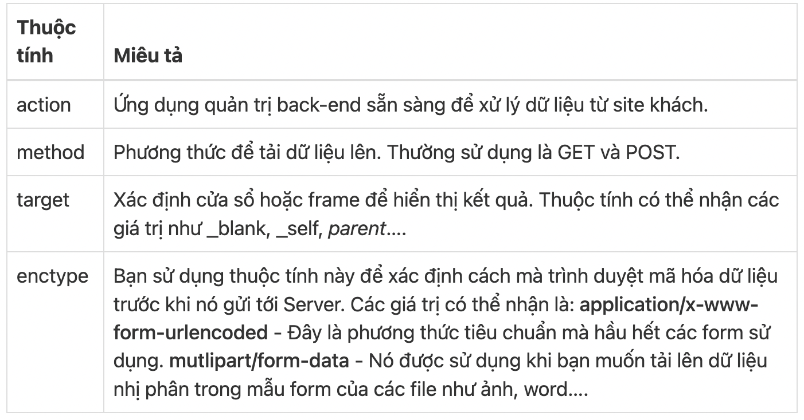
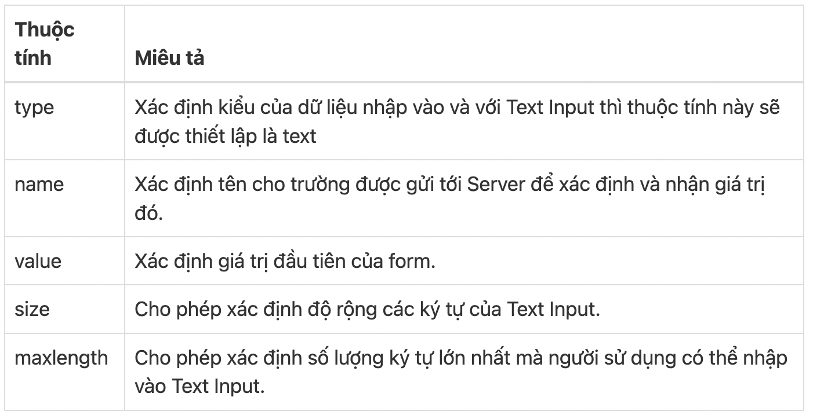
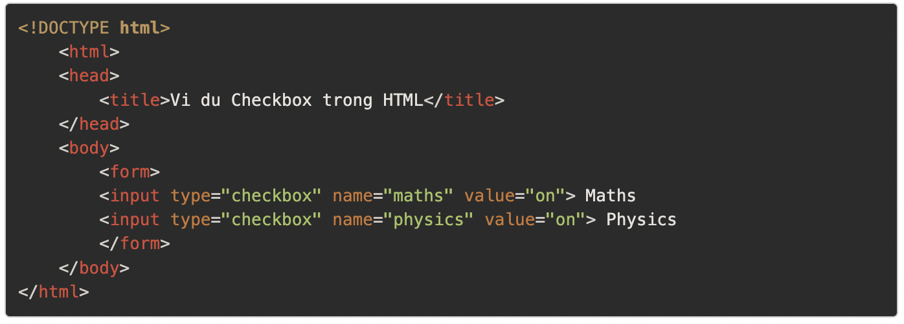
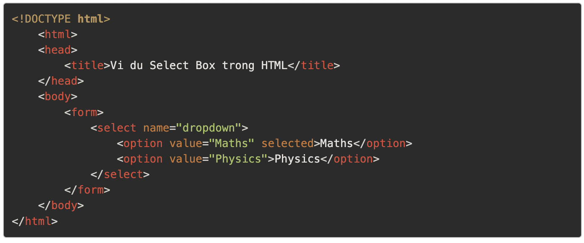
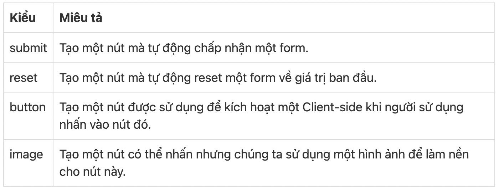
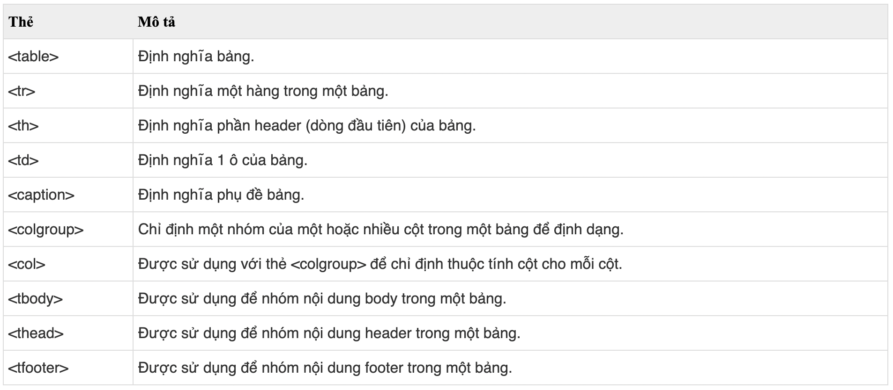
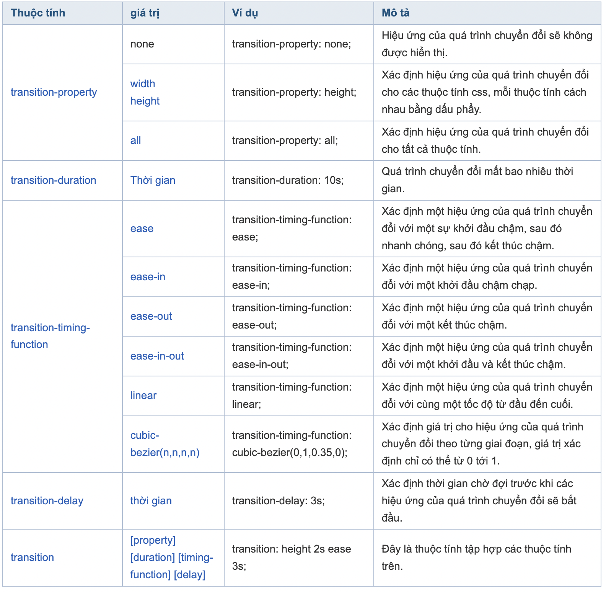
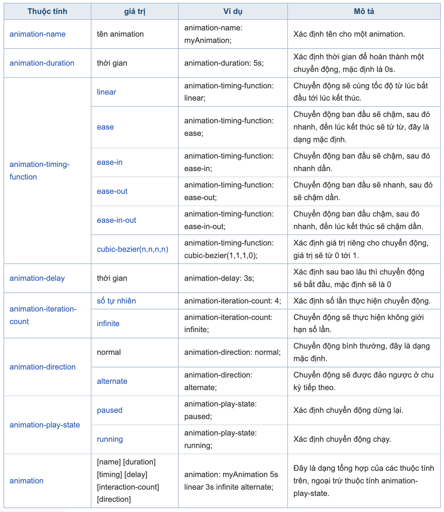
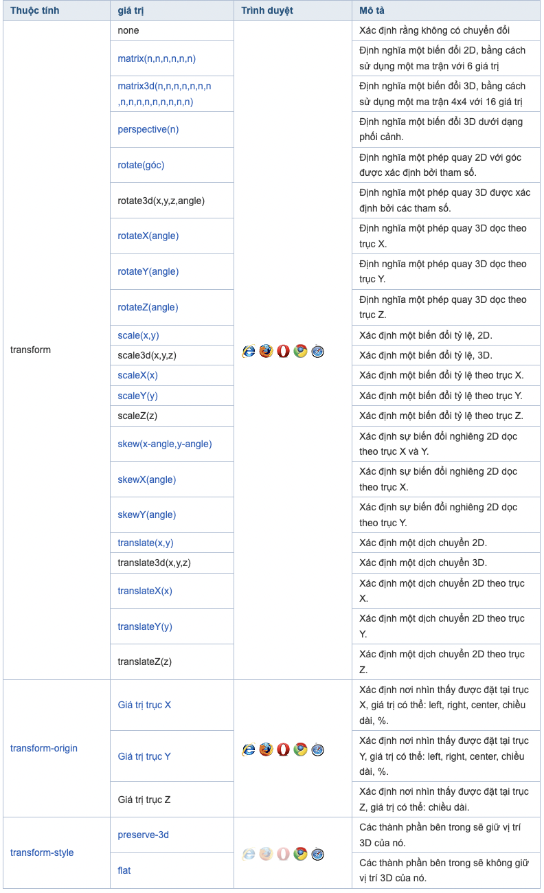

Các mẫu form trong HTML được yêu cầu khi bạn muốn thu thập một vài dữ liệu từ người sử dụng. Ví dụ, khi người sử dụng đăng ký, bạn có thể muốn thu thập thông tin như tên, địa chỉ email, thẻ tín dụng….
Một mẫu form sẽ nhận dữ liệu đầu vào từ site người sử dụng và sau đó sẽ thông báo nó tới các ứng dụng back-end như CGI, ASP Script hoặc PHP Script….
Có nhiều phần tử form có sẵn như các trường text, các trường textarea, menu, checkbox …
Thẻ form được sử dụng để tạo một Form trong HTML và thẻ này có cú pháp:

Ngoài các thuộc tính thông thường, sau đây là các thuộc tính của form hay sử dụng:

input
input
textarea
Các thuộc tính

Checkbox được sử dụng khi có nhiều hơn một tùy chọn được yêu cầu để chọn. Checkbox cũng được tạo ra bằng
cách sử dụng thẻ input nhưng thuộc tính type được thiết lập là checkbox.

Một Select Box cung cấp danh sách liệt kê từ trên xuống (hộp drop down) các tùy chọn đa dạng trong một form, và tại đó người sử dụng có thể chọn một hoặc nhiều lựa chọn.
Dưới đây là một ví dụ về một Form với một hộp drop down. 
Có nhiều cách trong HTML để tạo các nút có thể nhấn vào được (clickable). Bạn cũng có thể sử dụng thẻ
input để tạo các nút này bởi thiết lập thuộc tính type là button. Thuộc tính type có thể
nhận các giá trị sau:

Thẻ table trong HTML được sử dụng để hiển thị dữ liệu ở dạng bảng (hàng * cột). Có thể có nhiều cột trong một hàng. Các thẻ table trong HTML được sử dụng để quản lý việc bố cục trang web. Ví dụ: Phần tiêu đề, thanh điều hướng, nội dung trang, phần chân trang... Nhưng bạn nên sử dụng thẻ div thay vì table để quản lý bố cục của trang.

Nếu bạn muốn tạo một ô có độ dài lơn hơn 1 cột, thì bạn có thể dùng thuộc tính colspan
Nếu bạn muốn tạo một ô có độ dài lơn hơn hàng, thì bạn có thể dùng thuộc tính rowspan
Thẻ caption được sử dụng để định nghĩa bảng, thẻ này chỉ được sử dụng ngay sau thẻ table
Thuộc tính transition xác định một quá trình chuyển đổi khi có một hành động.
Transition có các giá trị như sau:

Thuộc tính animation xác định một chuyển động của một tag hay một hình ảnh, là sự tổng hợp của các thuộc tính: animation-name, animation-duration, animation-timing-function, animation-delay, animation-iteration-count, animation-direction.
Thuộc tính của animation

Thuộc tính transform xác định một chuyển đổi 2 chiều, 3 chiều, có thể là xoay, tỷ lệ, di chuyển, nghiêng, ...
Thuộc tính transform
